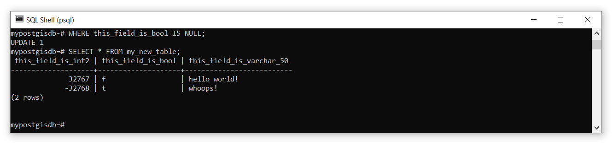

Lab 2 Analyze a Relational Database
Written by Paul D. Pickell
Lab Overview
In this lab you will learn how to create, manage, and analyze your own relational database. You will continue to practice with the tools that you learned in the prior lab: pgAdmin, QGIS, ArcGIS Pro, and psql. You will also be introduced to the Geospatial Data Abstraction Library (GDAL) and some of the handy programs that are available from this software library for managing data. You will learn more advanced Structured Query Language (SQL) statements that will allow you join tables, insert and update data, and analyze data in a relational database.
Learning Objectives
- Create and host your own PostgreSQL server with a PostGIS database
- Apply best practices for handling, organizing, and managing data
- Import geospatial data using the Geospatial Data Abstraction Library (GDAL)
- Practice joining and relating tables
- Practice inserting and updating data
- Analyze geospatial data in a relational database using SQL and PostGIS
Deliverables
Dump SQL file from Task 2 (15 points)
SQL statement (just the text) from Task 4 (15 points)
Data
All data for this lab are accessible via the UBC PostgreSQL server. Instructions for connecting to the server are given in the tasks below. We will be using data from the ubcv database.
Task 1: Host your own PostgreSQL Server
Step 1: Open pgAdmin.
Step 2: From the “Browser” pane on the left, right-click “Servers” and then select “Register” then “Server…”. We are going to add another server, but this time, it will be hosted on your local machine.
Step 3: Name the server “localhost” then click the “Connection” tab and set the “Host Name/Address” also as “localhost”. Enter a password for the server and leave everything else as the default. When finished, click “Save”. The new localhost server should now appear in your Browser. You can expand it, navigate through “Databases”, “postgres”, “Schemas”, “public”, and “Tables” to find that it is indeed empty.

Step 4: Open the psql shell.
If you are already connected to the UBC PostgreSQL server, you can switch this connection to the localhost server you just made in pgAdmin with the following command: \c "dbname=postgres host=localhost port=5432 user=postgres". You will then be prompted to enter your password.
Alternatively, you can open a new psql terminal window. The prompt should say Server [localhost]:. Press “Enter” on your keyboard to accept localhost as the server host name.
The prompt should then say Database [postgres]:. This is the default name of the database that was created when you hosted the server from pgAdmin. Press “Enter” on your keyboard to accept postgres as the database to connect to.
The prompt should then say Port [5432]:. This is the default port that the PostgreSQL server uses. Press “Enter” on your keyboard to accept the default port.
The prompt should then say Username [postgres]:. This is the default username that you created when you set up the PostgreSQL server in pgAdmin. Press “Enter” on your keyboard to accept the postgres username.
The prompt should then ask you for your password, Password for user postgres:. Type your password that you set in the earlier step with pgAdmin and then press “Enter” on your keyboard. Note that there is no feedback given to indicate what you are typing.
If everything is successful, then you should see postgres=#, which indicates you can now enter either psql commands or SQL statements. Note that the hashtag # indicates that you are connected to the current database with the “SUPERUSER” role, which is essentially the highest admin privilege.
Task 2: Create a PostGIS Database
Step 1: Create a new database called “mypostgisdb” with the following SQL command CREATE DATABASE mypostgisdb;. It is important to always escape SQL statements with a semi-colon otherwise psql will interpret your input as spanning multiple lines! If you forget the semi-colon, you can always just type it in the console and hit “Enter” on your keyboard and psql will interpret this as a two-line statement.
Step 2: Connect to your new database by using the psql command \c mypostgisdb. Note that this is NOT an SQL statement, so there is no need to escape the command with a semi-colon. Your console should now say mypostgisdb=#, which indicates you are now connected.
Step 3: Currently this is just a plain-vanilla PostgreSQL relational database that cannot handle spatial data. In order to convert this to a PostGIS database, we need to enable the PostGIS extension using the following SQL: CREATE EXTENSION postgis;.

If the above step fails, then you may need to first install PostGIS. Ordinarily, PostGIS is installed at the same time as PostgreSQL, they come packaged together. To install PostGIS, follow these steps:
Step 3a: Search “Stack Builder” from your Windows search bar and run the application.

Step 3b: If prompted, enter your admin credential or ask your instructor to provide this credential for you.
Step 3c: Select “PostgreSQL 16 (x64) on port 5432” from the drop down menu (or whatever version of PostgreSQL is installed on your machine). Click “Next”.

Step 3d: Expand “Categories”, then expand “Spatial Extensions”, and toggle on the PostGIS software version to install. Click “Next”. The Application Stack Builder will prompt for where you want to download PostGIS, just click “Next” to accept the default location. Then you will be prompted to install it after it downloads. Make sure that “Skip Installation” is toggled off, and continue to click “Next” to accept the defaults, and “Agree” to the end user license agreement.
Step 3e: After PostGIS installs successfully, close any psql shell you have open, re-open a new psql shell, and then begin again at Step 2 above.
Step 4: Listing the tables \dt will reveal the database has a table called “spatial_ref_sys”. List the fields of this table with \d spatial_ref_sys.
In addition to the field names, you will see there is an index called “spatial_ref_sys_pkey”, which is the dedicated field for the primary key for this table, and a constraint check to ensure that srid’s are valid only between \(1\) and \(998999\). You can test this constraint by trying to insert a new srid value of \(0\): INSERT INTO spatial_ref_sys (srid) VALUES (0);. The returned message,
ERROR: new row for relation "spatial_ref_sys" violates check constraint spatial_ref_sys_srid_check"
DETAIL: Failing row contains (0, null, null, null, null).DO NOT modify this table with any srids in the valid range otherwise you will need to recreate the PostGIS database!
Step 5: Return the first ten rows of the table for the fields “auth_name” and “auth_srid” with SELECT auth_name,auth_srid FROM spatial_ref_sys LIMIT 10;.
This table contains EPSG codes, which are used to easily relate spheroids, datums, and measurement units to geospatial data. You will find these codes used everywhere when you look at metadata and the properties of different data layers. One very commonly used code is EPSG 4326, which references the WGS 1984 datum.
Use the following query to return the contents of the entire spatial_ref_sys table: SELECT * FROM spatial_ref_sys;
Step 6: Write an SQL query to return proj4text of the WGS 1984 datum from the spatial_ref_sys table.
Now we will create some new data, just to show you how to use some useful SQL keywords. We will start with aspatial data first, then move on to spatial data. You can create a new table in your database with the following syntax (note that you cannot simply copy-paste below, you need to supply actual data type variable names):
CREATE TABLE table-name (
colunm-name-1 datatype,
colunm-name-2 datatype,
colunm-name-3 datatype,
...
);Data types are very important and the shorthand notation for these in PostgreSQL are listed on this web page and some commonly used data types are reproduced below with examples.
| Name | Description | Values |
|---|---|---|
| int2 | Signed 2-byte integer | -32,768 to 32,767 |
| int4 | Signed 4-byte integer | -2,147,483,648 to 2,147,483,647 |
| int8 | Signed 8-byte integer | -9,223,372,036,854,775,808 to 9,223,372,036,854,775,807 |
| bigserial | Autoincrementing 8-byte integer | 0 to 18,446,744,073,709,551,615 |
| float4 | Single prevision floating-point number (4 bytes) | ±10³⁸ with 6 or 7 significant digits |
| float8 | Double precision floating-point number (8 bytes) | ±10³⁰⁸ with 15 or 16 significant digits |
| bool | Logical Boolean | True or False |
| char(n) | Fixed length character string where n is the number of permitted characters | ‘Hello world!’ |
| varchar(n) | Variable length character string where n is the maximum number of permitted characters | ‘Hello world!’ and ‘Hello’ and ‘world’ and ‘!’ |
| date | Calendar date | 31/12/2000 |
Here is an example of creating a new table with some different data types:
CREATE TABLE my_new_table (
this_field_is_int2 int2,
this_field_is_bool bool,
this_field_is_varchar_50 varchar(50)
);
Watch out for unescaped parentheses when running multiline SQL statements! If you see mypostgisdb=#, then you are able to submit a new psql command or start an SQL statement. If you see mypostgisdb=-, then you have already started an SQL statement on a line above in the terminal. If you see mypostgisdb=(, then you have added an open parenthesis ‘(’ somewhere in your statement on a line above. When running a SQL statement over multiple lines, you need to ensure that you enclose all parentheses and end the statement with a semicolon ; in order to return the psql command line back to mypostgisdb=#. If you find yourself stuck an unable to exit mypostgisdb=(, try to close any open parentheses by typing ) and pressing “Enter”. If you find yourself unable to exit mypostgisdb=-, try ending the SQL statement by typing ; and pressing “Enter”. If both of those fail, you can try exiting the command with CTRL + C, which may also end psql and require you to reconnect to the database.
You can experiment with creating as many new tables as you want. If you need to delete a table, use the DROP keyword like this DROP TABLE my_new_table;.
It is good practice to assign a field (multiple fields) as a primary key when you create a table. This is done by simply adding PRIMARY KEY after the field definition when you make the table. For example:
CREATE TABLE my_new_table (
this_field_is_bigserial bigserial PRIMARY KEY,
this_field_is_int2 int2,
this_field_is_bool bool,
this_field_is_varchar_50 varchar(50)
);The bigserial data type is especially useful for this purpose because it auto-increments as you add rows and can accommodate more than 18 quintrillion rows, that is more than 18 million trillions! You can also create composite primary keys that are comprised of two or more fields to uniquely identify all rows:
CREATE TABLE my_new_table (
this_field_is_int2 int2,
this_field_is_bool bool,
this_field_is_varchar_50 varchar(50),
PRIMARY KEY(this_field_is_int2, this_field_is_bool)
);Note that if you use a compound primary key, like in the example above, or if you use one of your data fields as the primary key, then you are imposing a logic onto the table that prevents you from creating, updating, or inserting new rows that duplicate those values or combinations of values. After all, that is the purpose of a primary key, to uniquely identify all the tuples. Sometimes, this logic can be useful in the design of a table, but generally it is best practice to create a dedicated field for the primary key and this is also the behaviour that you will observe in attribute tables viewed in ArcGIS Pro and QGIS.
Step 7: Create a new table of assignments that are due next week (up to four total). Include course code, assignment name, the percent weighting of the assignment on your final grade in that course, and the due date. Use the appropriate data types for each field and define a primary key.
Now that the table and fields are defined, we will insert some data into the table. Inserting data uses the INSERT keyword followed by VALUES and then a comma-separated list of the values you want to insert in parentheses. For example:

If you want to insert a value for specific fields, then specify the field name(s) after the table name:
INSERT INTO my_new_table (this_field_is_int2, this_field_is_varchar_50) VALUES (-32768,'hi again!');
If you make a mistake or need to update a field later, then you use UPDATE and SET to identify the set of fields that should be updated. You can also test for NULL (empty values) using IS NULL or IS NOT NULL:
UPDATE my_new_table
SET this_field_is_bool = true, this_field_is_varchar_50 = 'whoops!'
WHERE this_field_is_bool IS NULL;
Dates require special handling because if you just try to insert them as strings or otherwise, they are treated as literals. For dates, we need to use the special TO_DATE function:
Step 8: Now fill in your table of assignments by inserting and/or updating the values as needed.
Once you are satisfied with the state of your table, you will dump your entire PostGIS database to an output SQL file and this will be one of your deliverables for this lab. PostgreSQL features a utility program called pg_dump that will take any database and output an SQL statement in a file that can be used to re-create the database. In other words, pg_dump is a backup method. This is also really handy if you want to create a local backup of a remote server! If you want more practice, try using it on the UBC PostgreSQL server.
Step 9: Open a Windows command prompt (search “command”). Take note of your current working directory, which is probably something like C:\Users\[your username]. This is where your database SQL file will be saved to. If your command prompt shows your working directory as C:\Program Files\QGIS X.XX.X or similar, then you will first need to change to a directory where you have permission to write to. Usually, this is somewhere in your user folder, which you can navigate to in the terminal with the change directory cd command: cd C:\Users\[your username]\Documents.
To dump your database, use the following command: pg_dump -d mypostgisdb -U postgres -h localhost > mypostgisdb.sql. You will be prompted to enter your password and then the new file mypostgisdb.sql will be saved in your working directory. If you see a command not found message, then type where pg_dump. Then copy the full path to the program executable when running the commands that follow, usually "C:\Program Files\PostgreSQL\16\bin". Copy the path and then in command prompt type set PATH=%PATH%;"C:\Program Files\PostgreSQL\16\bin", replacing X.XX.X with your current QGIS version. Try the pg_dump command again to ensure it works.
Step 10: Check to make sure that you can load the database back into PostgreSQL. In psql, create a new empty database named mypostgisdb_backup. Then, enter the following command from the Windows command prompt: psql -U postgres -h localhost mypostgisdb_backup < mypostgisdb.sql. You can now query the postgisdb_backup database to check that it is a copy of your other mypostgisdb database.
Task 3: Import Spatial Data Using GDAL
Now that you have some basic understanding of viewing and manipulating tables, we are going to look at some ways to import spatial data into your PostGIS database. To do this, we will be working with some utility programs in the Geospatial Data Abstraction Library (GDAL) pronounced “gee-dall”. You will probably find the GDAL documentation pages very helpful for reference. GDAL is used in ArcGIS, GRASS, SAGA, QGIS, ENVI, Google Earth, and also has Python bindings and an R package with bindings. In short, GDAL is largely the workhorse behind most open source geospatial software packages.
Step 1: Open the OSGeo4W shell by searching for it in Windows. Enter the command o-help and inspect all the available programs.
You might notice psql can be run from the OSGeo4W shell and pg_dump is also there. Some others we will cover in later labs, including pdal (Point Data Abstraction Library) pronounced “poodle” or “pee-dahl”, which handles LiDAR data, and many of the raster and image manipulation programs. For this lab, we are going to focus on two commonly used vector programs: ogrinfo and ogr2ogr.
Step 2: Type ogr2ogr --help in the console and press “Enter” on your keyboard. Inspect all the flags - and arguments for this program. If you see a command not found message, then type where ogr2ogr. Then copy the full path to the program executable when running the commands that follow, usually "C:\Program Files\QGIS X.XX.X\bin\". Copy the path and then in command prompt type set PATH=%PATH%;"C:\Program Files\QGIS X.XX.X\bin\", replacing X.XX.X with your current QGIS version. Try ogr2ogr --help again to ensure it works.
ogr2ogr is the primary utility program for working with vector data and as you can see, there are a lot of options! To show you some of the power of this little application, we are going to export some data from the UBC PostgreSQL server to our local machine, manipulate it, and then import it to our local PostGIS database.
Step 3: ogr2ogr is really useful for converting data between different formats and this is handy for exporting data out of a PostGIS database. Convert the ubcv_campus_trees table from the UBC PostgreSQL server with the following command:
ogr2ogr -f "ESRI Shapefile" ubcv_campus_trees.shp PG:"host=FRST-PostgreSQL.ead.ubc.ca user=student dbname=ubcv password=STUDENT_PASSWORD_HERE" "ubcv_campus_trees"Replace STUDENT_PASSWORD_HERE with the password that has been shared with the class.
This command tells ogr2ogr to connect to the ubcv PostGIS database on the PostgreSQL server PG:"host=FRST-PostgreSQL.ead.ubc.ca user=student dbname=ubcv password=STUDENT_PASSWORD_HERE", grab the table named "ubcv_campus_trees", and then return it to the local machine as an ESRI Shapefile -f "ESRI Shapefile". The file will be saved in your current working directory from the OSGeo4W shell.
Step 4: You can also specify an SQL query on the input data. For example, the following command will only return the Forest Sciences Centre polygon from ubcv_buildings:
ogr2ogr -where "bldg_code='FSC'" -f "ESRI Shapefile" ubcv_FSC.shp PG:"host=FRST-PostgreSQL.ead.ubc.ca user=student dbname=ubcv password=STUDENT_PASSWORD_HERE" "ubcv_buildings"You can write more complex SQL statements with the -sql flag instead of -where.
Step 5: Getting data into a PostGIS database is unremarkably similar as to taking it out. Import the FSC polygon into your localhost PostGIS database using the same command as Step 3, but change the following:
"ESRI Shapefile"to"PostgreSQL"- delete
ubcv_campus_trees.shp - modify the connection parameters for your localhost server
- change
"ubcv_campus_trees"toubcv_FSC.shp - specify that we want these data re-projected into UTM Zone 10N coordinates
-t_srs EPSG:3157
You will receive no feedback in the terminal if you were successful, but you can check in QGIS, ArcGIS Pro, or by using the ogrinfo program.
ogrinfo is a utility that is able to read a wide-variety of spatial data formats and return metadata for inspection. This program is useful for getting the geometry type of a file, the spatial extent of the features, and the coordinate system or the datum. You can also apply SQL queries and even inspect the attributes of specific features.
Step 6: Check that the FSC polygon was successfully added to your PostGIS database with the following command:
ogrinfo PG:"host=localhost user=postgres dbname=mypostgisdb password=YOUR_LOCALHOST_PASSWORD" "ubcv_FSC" -soThe screenshot below is a small snippet of what is returned in the OSGeo4W terminal window. As you can see, we have access to the feature count, spatial extent, Spatial Reference System (SRS), and even all the field names and data types if you scroll farther down. The -so flag gives us this “summary output”.

Step 7: Repeat this process to import the ubcv_campus_trees.shp you created in Step 3 to your localhost PostGIS database.
Task 4: Analyze a PostGIS Database using SQL
Now let us have some fun and explore some of the cool spatial processing features of our PostGIS database. PostGIS supports an unfathomable number of spatial operations that you would ordinarily find in GIS software like QGIS and ArcGIS. This task is merely to give you a taste of what is possible with SQL and PostGIS.
Suppose we want to know what species of trees are planted next to the Forest Sciences Centre at UBC.
Step 1: Open psql and connect to your mypostgisdb database on your localhost PostgreSQL server.
Step 2: Buffer the ubcv_fsc polygon with the following SQL statement:
This statement tells PostGIS to use the buffer function ST_Buffer, which requires a geometry field wkb_geometry and a buffer distance 15 (meters in our case, because we re-projected the polygon to UTM Zone 10N in the last task), on the FSC polygon FROM ubcv_fsc, and then write the resulting buffer to a new table INTO ubcv_fsc_buffer.
Step 3: Intersect the ubcv_campus_trees with the ubcv_fsc_buffer polygon you just made with the following SQL statement:
SELECT * INTO ubcv_fsc_trees FROM ubcv_campus_trees, ubcv_fsc_buffer WHERE ST_Intersects(wkb_geometry, st_buffer);The ST_Intersects takes two geometry fields wkb_geometry (ubcv_campus_trees) and st_buffer (ubcv_fsc_buffer), computes the intersection, and returns the features from the first geometry argument (ubcv_campus_trees) to a new table INTO ubcv_fsc_trees.
If you get an error here like this, ERROR: ST_Intersects: Operation on mixed SRID geometries (Point, 4326) != (Polygon, 3157) then you know that you have not correctly changed the projection of the ubcv_campus_trees data when you imported it into your localhost postgres database. Go back to the last task and check Steps 5-7.
Step 4: Open QGIS and then add ubcv_fsc, ubc_fsc_buffer, and ubcv_fsc_trees.wkb_geometry to your map to inspect them.

Step 5: Now we will do a simple SQL query to determine the species that are planted around the Forest Sciences Building:
This will return the “taxa” column and create a new column called “frequency” that contains values of the COUNT() function. The GROUP BY statement is needed when we use an aggregation method like COUNT(). Finally, the relation is ordered by the aggregation result in descending DESC order.

Step 6: Modify the statement above to sort the taxa alphabetically.
These last few steps are just to illustrate that you can run the same SQL statements above directly in QGIS.
Step 7: Open QGIS. From the top menu toolbar, select Database then DB Manager… This will open a new window where you can do basically everything you did in this task and the prior task. You can import/export data to whatever format you want, inspect the database, tables, and even preview the spatial features.

Step 8: At the top of the DB Manager window there is a small button to open an SQL tab. Click that and then enter the buffer statement again, but modify the output table name so that you do not create a conflict:
You should now have a new table in the database now called ubcv_fsc_buffer_qgis. You can also save the query by giving it a name in the Name field and even output the SQL query to a file. This can be helpful for managing large complex queries. The Create a view button will display the layer in your map view.
Examine that query above carefully. Remember that SELECT operates on column names, so what exactly are we selecting when we apply a function on a column name? What is the output column name of that function that is returned in ubcv_fsc_buffer_qgis? Open the attribute table in QGIS and look at the column name. When we apply a function on a column and do not specify a name for the output column name of the function, then the default column name will simply be the name of the function. So in this case, the output column name will be st_buffer, which is not very informative.
Note that the default behaviour of any SELECT is to simply return the existing column names. However, we could choose to rename any of those in the table that is returned. For example:
The AS is how we assign aliases to selected column names, which are returned in the new table. We can also completely omit AS and just provide the alias after the column name like:
You should spend some time understanding this behaviour because it is very important for how you structure more complex queries, which we will examine next.
Step 9: Using the WITH clause, combine all of our independent queries above into a single query in QGIS that buffers the FSC polygon by 15 m, intersects the buffer with the campus trees, and then reports the number of unique taxa around the building. See the screenshot below.

The WITH clause allows us to create temporary relations that can be referenced by name in subsequent SELECT statements. In the case above, ubcv_fsc_buffer_temporary is the temporary result from the buffer and ubcv_fsc_trees_temporary is the temporary result from intersecting the buffer with the campus trees.
As you will see, this is slightly different than using the INTO method from our prior examples, which creates a new relation in our database. The benefit of WITH and AS is that the relation is ephemeral and only exists for the moment that the SQL entire statement is executed; no new relation is written into our database.
Step 10: Using what you have learned, select one of the other PostGIS overlay methods and then apply it to any two datasets in the ubcv database on the UBC PostgreSQL server. You must use the WITH clause and you must also use one of the SQL aggregation functions. Refer to the examples provided in class and use those as a template to explore how these functions work. It is not important that your analysis makes sense, but it is important that your entire SQL statement can be executed from either QGIS or psql. Once your are satisfied with your SQL statement, copy and paste it to the assignment submission page on the course management system.
Hint: Check what the geometry column name is called for the layers that you choose to use and enter those exactly as you see them into your overlay function. Make sure that you are using compatible geometries for the overlay method you choose and read the linked documentation above if you have any doubts!
Summary
PostGIS has many powerful functions for handling geospatial data directly within a PostgreSQL database. These are not always practical for day-to-day use when compared with user-friendly applications like QGIS or ArcGIS Pro. However, you should now appreciate that you can remotely manipulate geospatial data on a server and this opens the possibility of very powerful web-based applications, cloud-based GIS solutions, and automated scripting that requires little visualization. If you are interested in learning more about what others have done, you can check out the Crunchy Data YouTube channel to see past “PostGIS Day” recordings.
Return to the Deliverables section to check off everything you need to submit for credit in the course management system.